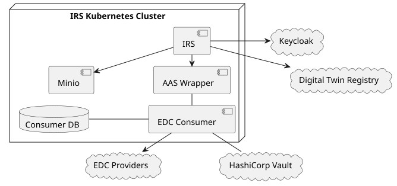

System Overview
The deployment contains the components required to connect the IRS to an existing Catena-X network. This includes:
-
IRS with Minio - part of the "item-relationship-service" Helm chart
-
EDC Consumer (controlplane & dataplane) - part of the "irs-edc-consumer" Helm chart
Everything else needs to be provided externally.

Installation
The IRS Helm repository can be found here: https://eclipse-tractusx.github.io/item-relationship-service/index.yaml
Use the latest release of the "item-relationship-service" chart. It contains all required dependencies.
If you also want to set up your own EDC consumer, use the tractusx-connector chart.
Supply the required configuration properties (see chapter Configuration) in a values.yaml file or override the settings directly.
Deployment using Helm
Add the IRS Helm repository:
$ helm repo add irs https://eclipse-tractusx.github.io/item-relationship-service
Then install the Helm chart into your cluster:
$ helm install -f your-values.yaml irs-app irs/item-relationship-service
Deployment using ArgoCD
Create a new Helm chart and use the IRS as a dependency.
dependencies:
- name: item-relationship-service
repository: https://eclipse-tractusx.github.io/item-relationship-service
version: 6.x.x
- name: tractusx-connector # optional
repository: https://eclipse-tractusx.github.io/tractusx-edc
version: 0.5.xThen provide your configuration as the values.yaml of that chart.
Create a new application in ArgoCD and point it to your repository / Helm chart folder.
Configuration
Take the following template and adjust the configuration parameters (<placeholders> mark the relevant spots). You can define the URLs as well as most of the secrets yourself.
The OAuth2, MIW and Vault configuration / secrets depend on your setup and might need to be provided externally.
Spring Configuration
The IRS application is configured using the Spring configuration mechanism. The main configuration file is the application.yaml.
server:
port: 8080 # The port the main application API listens on
trustedPort: ${SERVER_TRUSTED_PORT:} # The port used for the unsecured, internal API - if empty, the main port is used
spring:
application:
name: item-relationship-service
security:
oauth2:
client:
registration:
semantics:
authorization-grant-type: client_credentials
client-id: ${SEMANTICS_OAUTH2_CLIENT_ID} # Semantic Hub OAuth2 client ID used to authenticate with the IAM
client-secret: ${SEMANTICS_OAUTH2_CLIENT_SECRET} # Semantic Hub OAuth2 client secret used to authenticate with the IAM
discovery:
authorization-grant-type: client_credentials
client-id: ${DISCOVERY_OAUTH2_CLIENT_ID} # Dataspace Discovery OAuth2 client ID used to authenticate with the IAM
client-secret: ${DISCOVERY_OAUTH2_CLIENT_SECRET} # Dataspace Discovery OAuth2 client secret used to authenticate with the IAM
provider:
semantics:
token-uri: ${SEMANTICS_OAUTH2_CLIENT_TOKEN_URI:https://default} # OAuth2 endpoint to request tokens using the client credentials
discovery:
token-uri: ${DISCOVERY_OAUTH2_CLIENT_TOKEN_URI:https://default} # OAuth2 endpoint to request tokens using the client credentials
redis:
host: ${REDIS_HOST:localhost}
port: ${REDIS_PORT:6379}
password: ${REDIS_PASSWORD:}
cache:
type: simple # Use in-memory cache for @Cacheable
management: # Spring management API config, see https://spring.io/guides/gs/centralized-configuration/
endpoints:
web:
exposure:
include: health, threaddump, loggers, prometheus, info, metrics
endpoint:
health:
probes:
enabled: true
group:
readiness:
include: readinessState, diskSpace
show-details: always
health:
livenessstate:
enabled: true
readinessstate:
enabled: true
dependencies:
enabled: false
urls: { }
metrics:
distribution:
percentiles-histogram:
http: true
tags:
application: ${spring.application.name}
server:
port: 4004
logging.config: "classpath:log4j2.xml"
springdoc: # API docs configuration
api-docs:
path: /api/api-docs
swagger-ui:
path: /api/swagger-ui
writer-with-order-by-keys: true
irs: # Application config
apiUrl: "${IRS_API_URL:http://localhost:8080}" # Public URL of the application, used in Swagger UI
recursive:
localBpnl: ${IRS_RECURSIVE_LOCAL_BPNL:} # Mandatory BPNL of this IRS instance; startup fails when blank or not a BPNL.
timeout:
defaultJobTtl: ${IRS_RECURSIVE_TIMEOUT_DEFAULT_JOB_TTL:PT30M}
maxJobTtl: ${IRS_RECURSIVE_TIMEOUT_MAX_JOB_TTL:PT2H}
childResponseSafetyBuffer: ${IRS_RECURSIVE_TIMEOUT_CHILD_RESPONSE_SAFETY_BUFFER:PT60S}
timeoutCheckInterval: ${IRS_RECURSIVE_TIMEOUT_CHECK_INTERVAL:PT30S}
job:
batch:
threadCount: 5
scheduled:
threadCount: 5
cached:
threadCount: 5
callback:
timeout:
read: PT90S # HTTP read timeout for the Job API callback
connect: PT90S # HTTP connect timeout for the Job API callback
cleanup: # Determines how often the JobStore is being cleaned up. Different schedulers for completed and failed jobs.
scheduler:
# ┌───────────── second (0-59)
# │ ┌───────────── minute (0 - 59)
# │ │ ┌───────────── hour (0 - 23)
# │ │ │ ┌───────────── day of the month (1 - 31)
# │ │ │ │ ┌───────────── month (1 - 12) (or JAN-DEC)
# │ │ │ │ │ ┌───────────── day of the week (0 - 7)
# │ │ │ │ │ │ (or MON-SUN -- 0 or 7 is Sunday)
# │ │ │ │ │ │
completed: 0 0 * * * * # every hour
failed: 0 0 * * * * # every hour
jobstore:
ttl: # Determines how long jobs are stored in the respective state. After the TTL has expired, the job will be removed by the cleanup scheduler.
failed: "PT24H" # ISO 8601 Duration
completed: "PT24H" # ISO 8601 Duration
cron:
expression: "0 */5 * * * ?" # Determines how often the number of stored jobs is updated in the metrics API.
security:
api:
keys:
admin: ${API_KEY_ADMIN} # API Key to access IRS API with admin role
regular: ${API_KEY_REGULAR} # API Key to access IRS API with view role
blobstore:
persistence:
storeType: MINIO
minio:
endpoint: "${MINIO_URL}" # S3 compatible API endpoint (e.g. Minio)
accessKey: "${MINIO_ACCESS_KEY}" # S3 access key
secretKey: "${MINIO_SECRET_KEY}" # S3 secret key
azure:
baseUrl: ${AZURE_BLOB_STORAGE_URL}
clientId: ${AZURE_BLOB_STORAGE_CLIENT_ID}
clientSecret: ${AZURE_BLOB_STORAGE_CLIENT_SECRET}
tenantId: ${AZURE_BLOB_STORAGE_TENANT_ID}
useConnectionString: false
jobs:
containerName: ${BLOB_STORE_JOBS_CONTAINER:irs-jobs} # the name of the S3 bucket or Blob store container for jobs
daysToLive: ${BLOB_STORE_JOBS_EXPIRATION:7} # number of days to keep jobs in the store, use -1 to disable cleanup
policies:
containerName: ${BLOB_STORE_POLICY_CONTAINER:irs-policy-bucket} # the name of the S3 bucket or Blob store container for policies
daysToLive: ${BLOB_STORE_POLICY_EXPIRATION:-1} # number of days to keep policies in the store, use -1 to disable cleanup
chainOpeningGrants:
containerName: ${BLOB_STORE_CHAIN_OPENING_GRANT_CONTAINER:irs-chain-opening-grants} # the name of the S3 bucket or Blob store container for chain opening grants
daysToLive: ${BLOB_STORE_CHAIN_OPENING_GRANT_EXPIRATION:-1} # number of days to keep chain opening grants in the store, use -1 to disable cleanup
resilience4j:
retry: # REST client retry configuration
configs:
default:
maxAttempts: 3 # How often failed REST requests will be retried
waitDuration: 10s # How long to wait between each retry
enableExponentialBackoff: true # Whether subsequent retries will delay exponentially or not
exponentialBackoffMultiplier: 2 # Multiplier for the exponential delay
ignore-exceptions: # Do not retry on the listed exceptions
- org.springframework.web.client.HttpClientErrorException.NotFound
- org.eclipse.tractusx.irs.edc.client.ItemNotFoundInCatalogException
instances:
registry:
baseConfig: default
irs-edc-client:
cacheEdcUrls: true # Flag to enable caching of EDC URLs
callback:
mapping: /internal/endpoint-data-reference # The EDR token callback endpoint mapping
negotiation-mapping: /internal/negotiation-callback # The EDR negotiation callback endpoint mapping
callback-url: ${EDC_TRANSFER_CALLBACK_URL:} # The URL where the EDR token callback will be sent to.
negotiation-callback-url: ${EDC_NEGOTIATION_CALLBACK_URL:} # The URL where the negotiation callback will be sent to.
asyncTimeout: PT10M # Timout for future.get requests as ISO 8601 Duration
controlplane:
request-ttl: ${EDC_CONTROLPLANE_REQUEST_TTL:PT10M} # How long to wait for an async EDC negotiation request to finish, ISO 8601 Duration
endpoint:
data: ${EDC_CONTROLPLANE_ENDPOINT_DATA:} # URL of the EDC consumer controlplane data endpoint
catalog: ${EDC_CONTROLPLANE_ENDPOINT_CATALOG:/v3/catalog/request} # EDC consumer controlplane catalog path
edr-management: ${EDC_CONTROLPLANE_ENDPOINT_EDRS:/v2/edrs} # EDC consumer controlplane EDR management path
contract-negotiation: ${EDC_CONTROLPLANE_ENDPOINT_CONTRACT_NEGOTIATION:/v3/contractnegotiations} # EDC consumer controlplane contract negotiation path
transfer-process: ${EDC_CONTROLPLANE_ENDPOINT_TRANSFER_PROCESS:/v3/transferprocesses} # EDC consumer controlplane transfer process path
state-suffix: ${EDC_CONTROLPLANE_ENDPOINT_DATA:/state} # Path of the state suffix for contract negotiation and transfer process
provider-suffix: ${EDC_CONTROLPLANE_PROVIDER_SUFFIX:/api/v1/dsp} # Suffix to add to data requests to the EDC provider controlplane
catalog-limit: ${EDC_CONTROLPLANE_CATALOG_LIMIT:1000} # Max number of items to fetch from the EDC provider catalog
catalog-page-size: ${EDC_CONTROLPLANE_CATALOG_PAGE_SIZE:50} # Number of items to fetch at one page from the EDC provider catalog when using pagination
edr-management-enabled: false # Flag whether IRS uses classic EDC negotiation or EDR negotiation
api-key:
header: ${EDC_API_KEY_HEADER:} # API header key to use in communication with the EDC consumer controlplane
secret: ${EDC_API_KEY_SECRET:} # API header secret to use in communication with the EDC consumer controlplane
datareference:
storage:
duration: PT1H # Time after which stored data references will be cleaned up, ISO 8601 Duration
useRedis: false # Whether to use a Redis cache or in-memory cache
orchestration:
thread-pool-size: 5 # Thread pool size for maximum parallel negotiations
submodel:
request-ttl: ${EDC_SUBMODEL_REQUEST_TTL:PT10M} # How long to wait for an async EDC submodel retrieval to finish, ISO 8601 Duration
urn-prefix: ${EDC_SUBMODEL_URN_PREFIX:/urn} # A prefix used to identify URNs correctly in the submodel endpoint address
submodel-suffix: "/$value"
timeout:
read: PT90S # HTTP read timeout for the submodel client
connect: PT90S # HTTP connect timeout for the submodel client
catalog:
# IRS will only negotiate contracts for offers with a policy as defined in the Policy Store.
# The following configuration value allows the definition of default policies to be used
# if no policy has been defined via the Policy Store API.
# If the policy check fails, a tombstone will be created and this node will not be processed.
# The value must be Base64 encoded here. See decoded value in charts/item-relationship-service/values.yaml.
acceptedPolicies: "W3sKICAgICJwb2xpY3lJZCI6ICJkZWZhdWx0LXBvbGljeSIsCiAgICAiY3JlYXRlZE9uIjogIjIwMjQtMDctMTdUMTY6MTU6MTQuMTIzNDU2NzhaIiwKICAgICJ2YWxpZFVudGlsIjogIjk5OTktMDEtMDFUMDA6MDA6MDAuMDAwMDAwMDBaIiwKICAgICJwZXJtaXNzaW9ucyI6IFsKICAgICAgICB7CiAgICAgICAgICAgICJhY3Rpb24iOiAidXNlIiwKICAgICAgICAgICAgImNvbnN0cmFpbnQiOiB7CiAgICAgICAgICAgICAgICAiYW5kIjogWwogICAgICAgICAgICAgICAgICAgIHsKICAgICAgICAgICAgICAgICAgICAgICAgImxlZnRPcGVyYW5kIjogImh0dHBzOi8vdzNpZC5vcmcvY2F0ZW5heC9wb2xpY3kvRnJhbWV3b3JrQWdyZWVtZW50IiwKICAgICAgICAgICAgICAgICAgICAgICAgIm9wZXJhdG9yIjogewogICAgICAgICAgICAgICAgICAgICAgICAgICAgIkBpZCI6ICJlcSIKICAgICAgICAgICAgICAgICAgICAgICAgfSwKICAgICAgICAgICAgICAgICAgICAgICAgInJpZ2h0T3BlcmFuZCI6ICJ0cmFjZWFiaWxpdHk6MS4wIgogICAgICAgICAgICAgICAgICAgIH0sCiAgICAgICAgICAgICAgICAgICAgewogICAgICAgICAgICAgICAgICAgICAgICAibGVmdE9wZXJhbmQiOiAiaHR0cHM6Ly93M2lkLm9yZy9jYXRlbmF4L3BvbGljeS9Vc2FnZVB1cnBvc2UiLAogICAgICAgICAgICAgICAgICAgICAgICAib3BlcmF0b3IiOiB7CiAgICAgICAgICAgICAgICAgICAgICAgICAgICAiQGlkIjogImVxIgogICAgICAgICAgICAgICAgICAgICAgICB9LAogICAgICAgICAgICAgICAgICAgICAgICAicmlnaHRPcGVyYW5kIjogImN4LmNvcmUuaW5kdXN0cnljb3JlOjEiCiAgICAgICAgICAgICAgICAgICAgfQogICAgICAgICAgICAgICAgXQogICAgICAgICAgICB9CiAgICAgICAgfQogICAgXQp9XQ=="
discoveryFinderClient:
cacheTTL: PT24H # Time to live for DiscoveryFinderClient for findDiscoveryEndpoints method cache
connectorEndpointService:
cacheTTL: PT24H # Time to live for ConnectorEndpointService for fetchConnectorEndpoints method cache
digitalTwinRegistry:
type: ${DIGITALTWINREGISTRY_TYPE:decentral} # The type of DTR. This can be either "central" or "decentral". If "decentral", descriptorEndpoint, shellLookupEndpoint and oAuthClientId is not required.
descriptorEndpoint: ${DIGITALTWINREGISTRY_DESCRIPTOR_URL:} # The endpoint to retrieve AAS descriptors from the DTR, must contain the placeholder {aasIdentifier}
shellLookupEndpoint: ${DIGITALTWINREGISTRY_SHELL_LOOKUP_URL:} # The endpoint to lookup shells from the DTR, must contain the placeholder {assetIds}
shellDescriptorTemplate: ${DIGITALTWINREGISTRY_SHELL_DESCRIPTOR_TEMPLATE:/shell-descriptors/{aasIdentifier}} # The path to retrieve AAS descriptors from the decentral DTR, must contain the placeholder {aasIdentifier}
lookupShellsTemplate: ${DIGITALTWINREGISTRY_QUERY_SHELLS_PATH:/lookup/shells?assetIds={assetIds}} # The path to lookup shells from the decentral DTR, must contain the placeholder {assetIds}
oAuthClientId: discovery # ID of the OAuth2 client registration to use, see config spring.security.oauth2.client
timeout:
read: PT90S # HTTP read timeout for the digital twin registry client
connect: PT90S # HTTP connect timeout for the digital twin registry client
discovery:
oAuthClientId: discovery # ID of the OAuth2 client registration to use, see config spring.security.oauth2.client
discoveryFinderUrl: ${DIGITALTWINREGISTRY_DISCOVERY_FINDER_URL:} # The endpoint to discover EDC endpoints to a particular BPN.
type: bpnl # The type of discovery to be searched for
timeout:
read: PT90S # HTTP read timeout for the discovery client
connect: PT90S # HTTP connect timeout for the discovery client
semanticshub:
# The endpoint to retrieve the json schema of a model from the semantic hub. If specified, must contain the placeholder {urn}.
modelJsonSchemaEndpoint: "${SEMANTICSHUB_URL:}"
url: ""
# Path to directory on filesystem where semantic models can be loaded from.
# The filenames inside the directory must match the Base64 encoded URNs of the models.
localModelDirectory: ""
cleanup:
# ┌───────────── second (0-59)
# │ ┌───────────── minute (0 - 59)
# │ │ ┌───────────── hour (0 - 23)
# │ │ │ ┌───────────── day of the month (1 - 31)
# │ │ │ │ ┌───────────── month (1 - 12) (or JAN-DEC)
# │ │ │ │ │ ┌───────────── day of the week (0 - 7)
# │ │ │ │ │ │ (or MON-SUN -- 0 or 7 is Sunday)
# │ │ │ │ │ │
scheduler: 0 0 23 * * * # How often to clear the semantic model cache
defaultUrns: "${SEMANTICSHUB_DEFAULT_URNS:urn:bamm:io.catenax.serial_part:1.0.0#SerialPart}" # IDs of models to cache at IRS startup
oAuthClientId: semantics # ID of the OAuth2 client registration to use, see config spring.security.oauth2.client
timeout:
read: PT90S # HTTP read timeout for the semantic hub client
connect: PT90S # HTTP connect timeout for the semantic hub client
pageSize: "${SEMANTICSHUB_PAGE_SIZE:100}"
# ESS Module specific properties
ess:
localBpn: ${ESS_LOCAL_BPN:} # BPN value of product - used during EDC notification communication
localEdcEndpoint: ${ESS_EDC_URL:} # EDC base URL - used for creation of EDC assets for ESS notifications and as sender EDC for sent notifications
assetsPath: ${EDC_MANAGEMENT_PATH:/management/v3/assets} # EDC management API "assets" path - used for notification asset creation
policydefinitionsPath: ${EDC_MANAGEMENT_PATH:/management/v3/policydefinitions} # EDC management API "policydefinitions" path - used for notification policy definition creation
contractdefinitionsPath: ${EDC_MANAGEMENT_PATH:/management/v3/contractdefinitions} # EDC management API "contractdefinitions" path - used for notification contract definitions creation
irs:
url: "${IRS_URL:}" # IRS Url to connect with
discovery:
mockEdcResult: { } # Mocked BPN Investigation results
mockRecursiveEdcAsset: # Mocked BPN Recursive Investigation resultsHelm configuration IRS (values.yaml)
irsUrl: # "https://<irs-url>"
job:
batch:
threadCount: 5
scheduled:
threadCount: 5
cached:
threadCount: 5
ttl:
failed: "PT24H"
completed: "PT24H"
bpn: # BPN for this IRS instance; only users with this BPN are allowed to access the API
recursive:
# -- Optional BPNL override for recursive requests and responses. Defaults to the IRS instance value from `bpn`.
localBpnl:
timeout:
# -- Default lifetime of a recursive job when a request does not provide an explicit deadline. ISO-8601 duration.
defaultJobTtl: PT30M
# -- Maximum accepted lifetime of a recursive job. Longer requested deadlines are capped to this value. ISO-8601 duration.
maxJobTtl: PT2H
# -- Safety buffer subtracted from the job deadline before waiting for child responses stops. ISO-8601 duration.
childResponseSafetyBuffer: PT60S
# -- Interval used by the recursive timeout monitor to check for expired jobs and child response deadlines. ISO-8601 duration.
timeoutCheckInterval: PT30S
apiKeyAdmin: "password" # <api-key-admin> Admin auth key, Should be changed!
apiKeyRegular: "password" # <api-key-regular> View auth key, Should be changed!
ingress:
enabled: false
management:
health:
dependencies:
enabled: false # Flag to determine if external service healthcheck endpoints should be checked
urls: {} # Map of services with corresponding healthcheck endpoint url's. Example:
# service_name: http://service_name_host.com/health
digitalTwinRegistry:
type: decentral # The type of DTR. This can be either "central" or "decentral". If "decentral", descriptorEndpoint, shellLookupEndpoint and oAuthClientId is not required.
url: # "https://<digital-twin-registry-url>"
descriptorEndpoint: >-
{{ tpl (.Values.digitalTwinRegistry.url | default "") . }}/shell-descriptors/{aasIdentifier}
shellLookupEndpoint: >-
{{ tpl (.Values.digitalTwinRegistry.url | default "") . }}/lookup/shells?assetIds={assetIds}
shellDescriptorTemplate: /shell-descriptors/{aasIdentifier} # The path to retrieve AAS descriptors from the decentral DTR, must contain the placeholder {aasIdentifier}
lookupShellsTemplate: /lookup/shells?assetIds={assetIds} # The path to lookup shells from the decentral DTR, must contain the placeholder {assetIds}
oAuthClientId: discovery
discovery:
oAuthClientId: discovery # ID of the OAuth2 client registration to use, see config spring.security.oauth2.client
discoveryFinderUrl: # "https://<discovery-finder-url>
type: "bpnl" # discovery type to find bpnl type in EDC discovery
semanticshub:
url: # https://<semantics-hub-url>
pageSize: "100" # Number of aspect models to retrieve per page
modelJsonSchemaEndpoint: >-
{{- if .Values.semanticshub.url }}
{{- tpl (.Values.semanticshub.url | default "" ) . }}/{urn}/json-schema
{{- end }}
oAuthClientId: semantics
defaultUrns: >-
# urn:bamm:io.catenax.serial_part:1.0.0#SerialPart
# ,urn:bamm:com.catenax.single_level_bom_as_built:1.0.0#SingleLevelBomAsBuilt
localModels:
# Map of Base64 encoded strings of semantic models. The key must be the Base64 encoded full URN of the model.
# Example for urn:bamm:io.catenax.serial_part:1.0.0#SerialPart:
# dXJuOmJhbW06aW8uY2F0ZW5heC5zZXJpYWxfcGFydDoxLjAuMCNTZXJpYWxQYXJ0: ewoJIiRzY2hlbWEiOiAiaHR0cDovL2pzb24tc2NoZW1hLm9yZy9kcmFmdC0wNC9zY2hlbWEiLAoJImRlc2NyaXB0aW9uIjogIkEgc2VyaWFsaXplZCBwYXJ0IGlzIGFuIGluc3RhbnRpYXRpb24gb2YgYSAoZGVzaWduLSkgcGFydCwgd2hlcmUgdGhlIHBhcnRpY3VsYXIgaW5zdGFudGlhdGlvbiBjYW4gYmUgdW5pcXVlbHkgaWRlbnRpZmllZCBieSBtZWFucyBvZiBhIHNlcmlhbCBudW1iZXIgb3IgYSBzaW1pbGFyIGlkZW50aWZpZXIgKGUuZy4gVkFOKSBvciBhIGNvbWJpbmF0aW9uIG9mIG11bHRpcGxlIGlkZW50aWZpZXJzIChlLmcuIGNvbWJpbmF0aW9uIG9mIG1hbnVmYWN0dXJlciwgZGF0ZSBhbmQgbnVtYmVyKSIsCgkidHlwZSI6ICJvYmplY3QiLAoJImNvbXBvbmVudHMiOiB7CgkJInNjaGVtYXMiOiB7CgkJCSJ1cm5fYmFtbV9pby5jYXRlbmF4LnNlcmlhbF9wYXJ0XzEuMC4wX0NhdGVuYVhJZFRyYWl0IjogewoJCQkJInR5cGUiOiAic3RyaW5nIiwKCQkJCSJkZXNjcmlwdGlvbiI6ICJUaGUgcHJvdmlkZWQgcmVndWxhciBleHByZXNzaW9uIGVuc3VyZXMgdGhhdCB0aGUgVVVJRCBpcyBjb21wb3NlZCBvZiBmaXZlIGdyb3VwcyBvZiBjaGFyYWN0ZXJzIHNlcGFyYXRlZCBieSBoeXBoZW5zLCBpbiB0aGUgZm9ybSA4LTQtNC00LTEyIGZvciBhIHRvdGFsIG9mIDM2IGNoYXJhY3RlcnMgKDMyIGhleGFkZWNpbWFsIGNoYXJhY3RlcnMgYW5kIDQgaHlwaGVucyksIG9wdGlvbmFsbHkgcHJlZml4ZWQgYnkgXCJ1cm46dXVpZDpcIiB0byBtYWtlIGl0IGFuIElSSS4iLAoJCQkJInBhdHRlcm4iOiAiKF51cm46dXVpZDpbMC05YS1mQS1GXXs4fS1bMC05YS1mQS1GXXs0fS1bMC05YS1mQS1GXXs0fS1bMC05YS1mQS1GXXs0fS1bMC05YS1mQS1GXXsxMn0kKSIKCQkJfSwKCQkJInVybl9iYW1tX2lvLmNhdGVuYXguc2VyaWFsX3BhcnRfMS4wLjBfS2V5Q2hhcmFjdGVyaXN0aWMiOiB7CgkJCQkidHlwZSI6ICJzdHJpbmciLAoJCQkJImRlc2NyaXB0aW9uIjogIlRoZSBrZXkgY2hhcmFjdGVyaXN0aWMgb2YgYSBsb2NhbCBpZGVudGlmaWVyLiBBIHNwZWNpZmljIHN1YnNldCBvZiBrZXlzIGlzIHByZWRlZmluZWQsIGJ1dCBhZGRpdGlvbmFsbHkgYW55IG90aGVyIGN1c3RvbSBrZXkgaXMgYWxsb3dlZC4gUHJlZGVmaW5lZCBrZXlzICh0byBiZSB1c2VkIHdoZW4gYXBwbGljYWJsZSk6XG4tIFwibWFudWZhY3R1cmVySWRcIiAtIFRoZSBCdXNpbmVzcyBQYXJ0bmVyIE51bWJlciAoQlBOKSBvZiB0aGUgbWFudWZhY3R1cmVyLiBWYWx1ZTogQlBOLU51bW1lclxuLSBcInBhcnRJbnN0YW5jZUlkXCIgLSBUaGUgaWRlbnRpZmllciBvZiB0aGUgbWFudWZhY3R1cmVyIGZvciB0aGUgc2VyaWFsaXplZCBpbnN0YW5jZSBvZiB0aGUgcGFydCwgZS5nLiB0aGUgc2VyaWFsIG51bWJlclxuLSBcImJhdGNoSWRcIiAtIFRoZSBpZGVudGlmaWVyIG9mIHRoZSBiYXRjaCwgdG8gd2hpY2ggdGhlIHNlcmlhbHplZCBwYXJ0IGJlbG9uZ3Ncbi0gXCJ2YW5cIiAtIFRoZSBhbm9ueW1pemVkIHZlaGljbGUgaWRlbnRpZmljYXRpb24gbnVtYmVyIChWSU4pLiBWYWx1ZTogYW5vbnltaXplZCBWSU4gYWNjb3JkaW5nIHRvIE9FTSBhbm9ueW1pemF0aW9uIHJ1bGVzLiBOb3RlOiBJZiB0aGUga2V5IFwidmFuXCIgaXMgYXZhaWxhYmxlLCBcInBhcnRJbnN0YW5jZUlkXCIgbXVzdCBhbHNvIGJlIGF2YWlsYWJsZSBhbmQgaG9sZCB0aGUgaWRlbnRpY2FsIHZhbHVlLiIKCQkJfSwKCQkJInVybl9iYW1tX2lvLmNhdGVuYXguc2VyaWFsX3BhcnRfMS4wLjBfVmFsdWVDaGFyYWN0ZXJpc3RpYyI6IHsKCQkJCSJ0eXBlIjogInN0cmluZyIsCgkJCQkiZGVzY3JpcHRpb24iOiAiVGhlIHZhbHVlIG9mIGFuIGlkZW50aWZpZXIuIgoJCQl9LAoJCQkidXJuX2JhbW1faW8uY2F0ZW5heC5zZXJpYWxfcGFydF8xLjAuMF9LZXlWYWx1ZUxpc3QiOiB7CgkJCQkiZGVzY3JpcHRpb24iOiAiQSBsaXN0IG9mIGtleSB2YWx1ZSBwYWlycyBmb3IgbG9jYWwgaWRlbnRpZmllcnMsIHdoaWNoIGFyZSBjb21wb3NlZCBvZiBhIGtleSBhbmQgYSBjb3JyZXNwb25kaW5nIHZhbHVlLiIsCgkJCQkidHlwZSI6ICJvYmplY3QiLAoJCQkJInByb3BlcnRpZXMiOiB7CgkJCQkJImtleSI6IHsKCQkJCQkJImRlc2NyaXB0aW9uIjogIlRoZSBrZXkgb2YgYSBsb2NhbCBpZGVudGlmaWVyLiAiLAoJCQkJCQkiJHJlZiI6ICIjL2NvbXBvbmVudHMvc2NoZW1hcy91cm5fYmFtbV9pby5jYXRlbmF4LnNlcmlhbF9wYXJ0XzEuMC4wX0tleUNoYXJhY3RlcmlzdGljIgoJCQkJCX0sCgkJCQkJInZhbHVlIjogewoJCQkJCQkiZGVzY3JpcHRpb24iOiAiVGhlIHZhbHVlIG9mIGFuIGlkZW50aWZpZXIuIiwKCQkJCQkJIiRyZWYiOiAiIy9jb21wb25lbnRzL3NjaGVtYXMvdXJuX2JhbW1faW8uY2F0ZW5heC5zZXJpYWxfcGFydF8xLjAuMF9WYWx1ZUNoYXJhY3RlcmlzdGljIgoJCQkJCX0KCQkJCX0sCgkJCQkicmVxdWlyZWQiOiBbCgkJCQkJImtleSIsCgkJCQkJInZhbHVlIgoJCQkJXQoJCQl9LAoJCQkidXJuX2JhbW1faW8uY2F0ZW5heC5zZXJpYWxfcGFydF8xLjAuMF9Mb2NhbElkZW50aWZpZXJDaGFyYWN0ZXJpc3RpYyI6IHsKCQkJCSJkZXNjcmlwdGlvbiI6ICJBIHNpbmdsZSBzZXJpYWxpemVkIHBhcnQgbWF5IGhhdmUgbXVsdGlwbGUgYXR0cmlidXRlcywgdGhhdCB1bmlxdWVseSBpZGVudGlmeSBhIHRoYXQgcGFydCBpbiBhIHNwZWNpZmljIGRhdGFzcGFjZSAoZS5nLiB0aGUgbWFudWZhY3R1cmVyYHMgZGF0YXNwYWNlKSIsCgkJCQkidHlwZSI6ICJhcnJheSIsCgkJCQkiaXRlbXMiOiB7CgkJCQkJIiRyZWYiOiAiIy9jb21wb25lbnRzL3NjaGVtYXMvdXJuX2JhbW1faW8uY2F0ZW5heC5zZXJpYWxfcGFydF8xLjAuMF9LZXlWYWx1ZUxpc3QiCgkJCQl9LAoJCQkJInVuaXF1ZUl0ZW1zIjogdHJ1ZQoJCQl9LAoJCQkidXJuX2JhbW1faW8ub3Blbm1hbnVmYWN0dXJpbmdfY2hhcmFjdGVyaXN0aWNfMi4wLjBfVGltZXN0YW1wIjogewoJCQkJInR5cGUiOiAic3RyaW5nIiwKCQkJCSJwYXR0ZXJuIjogIi0/KFsxLTldWzAtOV17Myx9fDBbMC05XXszfSktKDBbMS05XXwxWzAtMl0pLSgwWzEtOV18WzEyXVswLTldfDNbMDFdKVQoKFswMV1bMC05XXwyWzAtM10pOlswLTVdWzAtOV06WzAtNV1bMC05XShcXC5bMC05XSspP3woMjQ6MDA6MDAoXFwuMCspPykpKFp8KFxcK3wtKSgoMFswLTldfDFbMC0zXSk6WzAtNV1bMC05XXwxNDowMCkpPyIsCgkJCQkiZGVzY3JpcHRpb24iOiAiRGVzY3JpYmVzIGEgUHJvcGVydHkgd2hpY2ggY29udGFpbnMgdGhlIGRhdGUgYW5kIHRpbWUgd2l0aCBhbiBvcHRpb25hbCB0aW1lem9uZS4iCgkJCX0sCgkJCSJ1cm5fYmFtbV9pby5jYXRlbmF4LnNlcmlhbF9wYXJ0XzEuMC4wX1Byb2R1Y3Rpb25Db3VudHJ5Q29kZVRyYWl0IjogewoJCQkJInR5cGUiOiAic3RyaW5nIiwKCQkJCSJkZXNjcmlwdGlvbiI6ICJSZWd1bGFyIEV4cHJlc3Npb24gdGhhdCBlbnN1cmVzIGEgdGhyZWUtbGV0dGVyIGNvZGUgIiwKCQkJCSJwYXR0ZXJuIjogIl5bQS1aXVtBLVpdW0EtWl0kIgoJCQl9LAoJCQkidXJuX2JhbW1faW8uY2F0ZW5heC5zZXJpYWxfcGFydF8xLjAuMF9NYW51ZmFjdHVyaW5nQ2hhcmFjdGVyaXN0aWMiOiB7CgkJCQkiZGVzY3JpcHRpb24iOiAiQ2hhcmFjdGVyaXN0aWMgdG8gZGVzY3JpYmUgbWFudWZhY3R1cmluZyByZWxhdGVkIGRhdGEiLAoJCQkJInR5cGUiOiAib2JqZWN0IiwKCQkJCSJwcm9wZXJ0aWVzIjogewoJCQkJCSJkYXRlIjogewoJCQkJCQkiZGVzY3JpcHRpb24iOiAiVGltZXN0YW1wIG9mIHRoZSBtYW51ZmFjdHVyaW5nIGRhdGUgYXMgdGhlIGZpbmFsIHN0ZXAgaW4gcHJvZHVjdGlvbiBwcm9jZXNzIChlLmcuIGZpbmFsIHF1YWxpdHkgY2hlY2ssIHJlYWR5LWZvci1zaGlwbWVudCBldmVudCkiLAoJCQkJCQkiJHJlZiI6ICIjL2NvbXBvbmVudHMvc2NoZW1hcy91cm5fYmFtbV9pby5vcGVubWFudWZhY3R1cmluZ19jaGFyYWN0ZXJpc3RpY18yLjAuMF9UaW1lc3RhbXAiCgkJCQkJfSwKCQkJCQkiY291bnRyeSI6IHsKCQkJCQkJImRlc2NyaXB0aW9uIjogIkNvdW50cnkgY29kZSB3aGVyZSB0aGUgcGFydCB3YXMgbWFudWZhY3R1cmVkIiwKCQkJCQkJIiRyZWYiOiAiIy9jb21wb25lbnRzL3NjaGVtYXMvdXJuX2JhbW1faW8uY2F0ZW5heC5zZXJpYWxfcGFydF8xLjAuMF9Qcm9kdWN0aW9uQ291bnRyeUNvZGVUcmFpdCIKCQkJCQl9CgkJCQl9LAoJCQkJInJlcXVpcmVkIjogWwoJCQkJCSJkYXRlIgoJCQkJXQoJCQl9LAoJCQkidXJuX2JhbW1faW8uY2F0ZW5heC5zZXJpYWxfcGFydF8xLjAuMF9QYXJ0SWRDaGFyYWN0ZXJpc3RpYyI6IHsKCQkJCSJ0eXBlIjogInN0cmluZyIsCgkJCQkiZGVzY3JpcHRpb24iOiAiVGhlIHBhcnQgSUQgaXMgYSBtdWx0aS1jaGFyYWN0ZXIgc3RyaW5nLCB1c3VzYWxseSBhc3NpZ25lZCBieSBhbiBFUlAgc3lzdGVtIgoJCQl9LAoJCQkidXJuX2JhbW1faW8uY2F0ZW5heC5zZXJpYWxfcGFydF8xLjAuMF9QYXJ0TmFtZUNoYXJhY3RlcmlzdGljIjogewoJCQkJInR5cGUiOiAic3RyaW5nIiwKCQkJCSJkZXNjcmlwdGlvbiI6ICJQYXJ0IE5hbWUgaW4gc3RyaW5nIGZvcm1hdCBmcm9tIHRoZSByZXNwZWN0aXZlIHN5c3RlbSBpbiB0aGUgdmFsdWUgY2hhaW4iCgkJCX0sCgkJCSJ1cm5fYmFtbV9pby5jYXRlbmF4LnNlcmlhbF9wYXJ0XzEuMC4wX0NsYXNzaWZpY2F0aW9uQ2hhcmFjdGVyaXN0aWMiOiB7CgkJCQkidHlwZSI6ICJzdHJpbmciLAoJCQkJImRlc2NyaXB0aW9uIjogIkEgcGFydCB0eXBlIG11c3QgYmUgcGxhY2VkIGludG8gb25lIG9mIHRoZSBmb2xsb3dpbmcgY2xhc3NlczogJ2NvbXBvbmVudCcsICdwcm9kdWN0JywgJ3NvZnR3YXJlJywgJ2Fzc2VtYmx5JywgJ3Rvb2wnLCBvciAncmF3IG1hdGVyaWFsJy4iLAoJCQkJImVudW0iOiBbCgkJCQkJInByb2R1Y3QiLAoJCQkJCSJyYXcgbWF0ZXJpYWwiLAoJCQkJCSJzb2Z0d2FyZSIsCgkJCQkJImFzc2VtYmx5IiwKCQkJCQkidG9vbCIsCgkJCQkJImNvbXBvbmVudCIKCQkJCV0KCQkJfSwKCQkJInVybl9iYW1tX2lvLmNhdGVuYXguc2VyaWFsX3BhcnRfMS4wLjBfUGFydFR5cGVJbmZvcm1hdGlvbkNoYXJhY3RlcmlzdGljIjogewoJCQkJImRlc2NyaXB0aW9uIjogIlRoZSBjaGFyYWN0ZXJpc3RpY3Mgb2YgdGhlIHBhcnQgdHlwZSIsCgkJCQkidHlwZSI6ICJvYmplY3QiLAoJCQkJInByb3BlcnRpZXMiOiB7CgkJCQkJIm1hbnVmYWN0dXJlclBhcnRJZCI6IHsKCQkJCQkJImRlc2NyaXB0aW9uIjogIlBhcnQgSUQgYXMgYXNzaWduZWQgYnkgdGhlIG1hbnVmYWN0dXJlciBvZiB0aGUgcGFydC4gVGhlIFBhcnQgSUQgaWRlbnRpZmllcyB0aGUgcGFydCAoYXMgZGVzaWduZWQpIGluIHRoZSBtYW51ZmFjdHVyZXJgcyBkYXRhc3BhY2UuIFRoZSBQYXJ0IElEIGRvZXMgbm90IHJlZmVyZW5jZSBhIHNwZWNpZmljIGluc3RhbmNlIG9mIGEgcGFydCBhbmQgdGh1cyBzaG91bGQgbm90IGJlIGNvbmZ1c2VkIHdpdGggdGhlIHNlcmlhbCBudW1iZXIuIiwKCQkJCQkJIiRyZWYiOiAiIy9jb21wb25lbnRzL3NjaGVtYXMvdXJuX2JhbW1faW8uY2F0ZW5heC5zZXJpYWxfcGFydF8xLjAuMF9QYXJ0SWRDaGFyYWN0ZXJpc3RpYyIKCQkJCQl9LAoJCQkJCSJjdXN0b21lclBhcnRJZCI6IHsKCQkJCQkJImRlc2NyaXB0aW9uIjogIlBhcnQgSUQgYXMgYXNzaWduZWQgYnkgdGhlIG1hbnVmYWN0dXJlciBvZiB0aGUgcGFydC4gVGhlIFBhcnQgSUQgaWRlbnRpZmllcyB0aGUgcGFydCAoYXMgZGVzaWduZWQpIGluIHRoZSBjdXN0b21lcmBzIGRhdGFzcGFjZS4gVGhlIFBhcnQgSUQgZG9lcyBub3QgcmVmZXJlbmNlIGEgc3BlY2lmaWMgaW5zdGFuY2Ugb2YgYSBwYXJ0IGFuZCB0aHVzIHNob3VsZCBub3QgYmUgY29uZnVzZWQgd2l0aCB0aGUgc2VyaWFsIG51bWJlci4iLAoJCQkJCQkiJHJlZiI6ICIjL2NvbXBvbmVudHMvc2NoZW1hcy91cm5fYmFtbV9pby5jYXRlbmF4LnNlcmlhbF9wYXJ0XzEuMC4wX1BhcnRJZENoYXJhY3RlcmlzdGljIgoJCQkJCX0sCgkJCQkJIm5hbWVBdE1hbnVmYWN0dXJlciI6IHsKCQkJCQkJImRlc2NyaXB0aW9uIjogIk5hbWUgb2YgdGhlIHBhcnQgYXMgYXNzaWduZWQgYnkgdGhlIG1hbnVmYWN0dXJlciIsCgkJCQkJCSIkcmVmIjogIiMvY29tcG9uZW50cy9zY2hlbWFzL3Vybl9iYW1tX2lvLmNhdGVuYXguc2VyaWFsX3BhcnRfMS4wLjBfUGFydE5hbWVDaGFyYWN0ZXJpc3RpYyIKCQkJCQl9LAoJCQkJCSJuYW1lQXRDdXN0b21lciI6IHsKCQkJCQkJImRlc2NyaXB0aW9uIjogIk5hbWUgb2YgdGhlIHBhcnQgYXMgYXNzaWduZWQgYnkgdGhlIGN1c3RvbWVyIiwKCQkJCQkJIiRyZWYiOiAiIy9jb21wb25lbnRzL3NjaGVtYXMvdXJuX2JhbW1faW8uY2F0ZW5heC5zZXJpYWxfcGFydF8xLjAuMF9QYXJ0TmFtZUNoYXJhY3RlcmlzdGljIgoJCQkJCX0sCgkJCQkJImNsYXNzaWZpY2F0aW9uIjogewoJCQkJCQkiZGVzY3JpcHRpb24iOiAiVGhlIGNsYXNzaWZpY2F0aW9uIG9mIHRoZSBwYXJ0IHR5cGUgYWNjb3JkaW5nIHRvIFNURVAgc3RhbmRhcmQgZGVmaW5pdGlvbiIsCgkJCQkJCSIkcmVmIjogIiMvY29tcG9uZW50cy9zY2hlbWFzL3Vybl9iYW1tX2lvLmNhdGVuYXguc2VyaWFsX3BhcnRfMS4wLjBfQ2xhc3NpZmljYXRpb25DaGFyYWN0ZXJpc3RpYyIKCQkJCQl9CgkJCQl9LAoJCQkJInJlcXVpcmVkIjogWwoJCQkJCSJtYW51ZmFjdHVyZXJQYXJ0SWQiLAoJCQkJCSJuYW1lQXRNYW51ZmFjdHVyZXIiLAoJCQkJCSJjbGFzc2lmaWNhdGlvbiIKCQkJCV0KCQkJfQoJCX0KCX0sCgkicHJvcGVydGllcyI6IHsKCQkiY2F0ZW5hWElkIjogewoJCQkiZGVzY3JpcHRpb24iOiAiVGhlIGZ1bGx5IGFub255bW91cyBDYXRlbmEtWCBJRCBvZiB0aGUgc2VyaWFsaXplZCBwYXJ0LCB2YWxpZCBmb3IgdGhlIENhdGVuYS1YIGRhdGFzcGFjZS4iLAoJCQkiJHJlZiI6ICIjL2NvbXBvbmVudHMvc2NoZW1hcy91cm5fYmFtbV9pby5jYXRlbmF4LnNlcmlhbF9wYXJ0XzEuMC4wX0NhdGVuYVhJZFRyYWl0IgoJCX0sCgkJImxvY2FsSWRlbnRpZmllcnMiOiB7CgkJCSJkZXNjcmlwdGlvbiI6ICJBIGxvY2FsIGlkZW50aWZpZXIgZW5hYmxlcyBpZGVudGlmaWNhdGlvbiBvZiBhIHBhcnQgaW4gYSBzcGVjaWZpYyBkYXRhc3BhY2UsIGJ1dCBpcyBub3QgdW5pcXVlIGluIENhdGVuYS1YIGRhdGFzcGFjZS4gTXVsdGlwbGUgbG9jYWwgaWRlbnRpZmllcnMgbWF5IGV4aXN0LiIsCgkJCSIkcmVmIjogIiMvY29tcG9uZW50cy9zY2hlbWFzL3Vybl9iYW1tX2lvLmNhdGVuYXguc2VyaWFsX3BhcnRfMS4wLjBfTG9jYWxJZGVudGlmaWVyQ2hhcmFjdGVyaXN0aWMiCgkJfSwKCQkibWFudWZhY3R1cmluZ0luZm9ybWF0aW9uIjogewoJCQkiZGVzY3JpcHRpb24iOiAiSW5mb3JtYXRpb24gZnJvbSBtYW51ZmFjdHVyaW5nIHByb2Nlc3MsIHN1Y2ggYXMgbWFudWZhY3R1cmluZyBkYXRlIGFuZCBtYW51ZmFjdHVyaW5nIGNvdW50cnkiLAoJCQkiJHJlZiI6ICIjL2NvbXBvbmVudHMvc2NoZW1hcy91cm5fYmFtbV9pby5jYXRlbmF4LnNlcmlhbF9wYXJ0XzEuMC4wX01hbnVmYWN0dXJpbmdDaGFyYWN0ZXJpc3RpYyIKCQl9LAoJCSJwYXJ0VHlwZUluZm9ybWF0aW9uIjogewoJCQkiZGVzY3JpcHRpb24iOiAiVGhlIHBhcnQgdHlwZSBmcm9tIHdoaWNoIHRoZSBzZXJpYWxpemVkIHBhcnQgaGFzIGJlZW4gaW5zdGFudGlhdGVkIiwKCQkJIiRyZWYiOiAiIy9jb21wb25lbnRzL3NjaGVtYXMvdXJuX2JhbW1faW8uY2F0ZW5heC5zZXJpYWxfcGFydF8xLjAuMF9QYXJ0VHlwZUluZm9ybWF0aW9uQ2hhcmFjdGVyaXN0aWMiCgkJfQoJfSwKCSJyZXF1aXJlZCI6IFsKCQkiY2F0ZW5hWElkIiwKCQkibG9jYWxJZGVudGlmaWVycyIsCgkJIm1hbnVmYWN0dXJpbmdJbmZvcm1hdGlvbiIsCgkJInBhcnRUeXBlSW5mb3JtYXRpb24iCgldCn0=
blobstore:
persistence:
storeType: MINIO
minio:
endpoint: "http://{{ .Release.Name }}-minio:9000"
accessKey: minio
secretKey:
jobs:
# -- Blob-store container used for jobs.
containerName: irs-jobs
# -- Number of days to retain jobs. Use -1 to disable cleanup.
daysToLive: 7
policies:
# -- Blob-store container used for policies.
containerName: irs-policy-bucket
# -- Number of days to retain policies. Use -1 to disable cleanup.
daysToLive: -1
chainOpeningGrants:
# -- Blob-store container used for recursive chain opening grants.
containerName: irs-chain-opening-grants
# -- Number of days to retain chain opening grants. Use -1 to disable cleanup.
daysToLive: -1
oauth2:
clientTokenUri: # <oauth2-token-uri>
semantics:
clientId: # <semantics-client-id>
clientSecret: # <semantics-client-secret>
discovery:
clientId: # <discovery-client-id>
clientSecret: # <discovery-client-secret>
edc:
controlplane:
endpoint:
data: "" # <edc-controlplane-endpoint-data>
catalog: /v3/catalog/request # EDC consumer controlplane catalog path
edrManagement: /v2/edrs # EDC consumer controlplane EDR management path
contractnegotiation: /v3/contractnegotiations # EDC consumer controlplane contract negotiation path
transferprocess: /v3/transferprocesses # EDC consumer controlplane transfer process path
statesuffix: /state # Path of the state suffix for contract negotiation and transfer process
contractAgreements: /v3/contractagreements # EDC consumer controlplane contract agreements path
request:
ttl: PT10M # Requests to controlplane will time out after this duration (see https://en.wikipedia.org/wiki/ISO_8601#Durations)
provider:
suffix: /api/v1/dsp
catalog:
limit: 1000 # Max number of catalog items to retrieve from the controlplane
pagesize: 50 # Number of catalog items to retrieve on one page for pagination
apikey:
header: "X-Api-Key" # Name of the EDC api key header field
secret: "" # <edc-api-key>
edrManagementEnabled: false # Flag whether IRS uses classic EDC negotiation or EDR negotiation
datareference:
storage:
useRedis: false
callbackMapping: # The EDR token callback endpoint path mapping - used to expose EDR callback endpoint
negotiationCallbackMapping: # The EDR negotiation callback endpoint mapping - used to expose negotiation callback endpoint
callbackurl: # The URL where the EDR token callback will be sent to.
negotiationCallbackurl: # The URL where the negotiation callback will be sent to.
asyncTimeout: PT10M # Timout for future.get requests as ISO 8601 Duration
submodel:
request:
ttl: PT10M # Requests to dataplane will time out after this duration (see https://en.wikipedia.org/wiki/ISO_8601#Durations)
urnprefix: /urn
suffix: /$value
catalog:
# IRS will only negotiate contracts for offers with a policy as defined in the Policy Store.
# The following configuration value allows the definition of default policies to be used
# if no policy has been defined via the Policy Store API.
# If the policy check fails, a tombstone will be created and this node will not be processed.
# Configure the default policies as JSON array using multiline string here.
acceptedPolicies: >
[{
"policyId": "default-policy",
"createdOn": "2024-07-17T16:15:14.12345678Z",
"validUntil": "9999-01-01T00:00:00.00000000Z",
"permissions": [
{
"action": "use",
"constraint": {
"and": [
{
"leftOperand": "https://w3id.org/catenax/policy/FrameworkAgreement",
"operator": {
"@id": "eq"
},
"rightOperand": "traceability:1.0"
},
{
"leftOperand": "https://w3id.org/catenax/policy/UsagePurpose",
"operator": {
"@id": "eq"
},
"rightOperand": "cx.core.industrycore:1"
}
]
}
}
]
}]
discoveryFinderClient:
cacheTTL: PT24H # Time to live for DiscoveryFinderClient for findDiscoveryEndpoints method cache
connectorEndpointService:
cacheTTL: PT24H # Time to live for ConnectorEndpointService for fetchConnectorEndpoints method cache
orchestration:
threadPoolSize: 5 # Thread pool size for maximum parallel negotiations
ess:
edc:
host: # EDC base URL - used for creation of EDC assets for ESS notifications and as sender EDC for sent notifications
mockEdcResult: # Map of BPNs and YES/NO strings - this configures the ESS mock response in case it called to investigate a BPN
mockRecursiveEdcAsset: # List of BPNs for which the special, mocked notification asset should be used
assetsPath: /management/v3/assets # EDC management API "assets" path - used for notification asset creation
policydefinitionsPath: /management/v3/policydefinitions # EDC management API "policydefinitions" path - used for notification policy definition creation
contractdefinitionsPath: /management/v3/contractdefinitions # EDC management API "contractdefinitions" path - used for notification contract definitions creation
config:
# If true, the config provided below will completely replace the configmap.
# In this case, you need to provide all required config values defined above yourself!
# If false, the custom config will just be appended to the configmap.
override: false
# Provide your custom configuration here (overrides IRS Spring application.yaml)
content:
env: [] # You can provide your own environment variables for the IRS here.
# - name: JAVA_TOOL_OPTIONS
# value: -Dhttps.proxyHost=1.2.3.4
redisConfig:
enabled: false
host: localhost
port: 6379
password: redispwd
#######################
# Minio Configuration #
#######################
minio:
enabled: true
mode: standalone
persistence:
size: 1Gi
# overwrite redis images due to deprecation of bitnami images
image:
repository: quay.io/minio/minio
# overwrite minio version RELEASE.2022-11-11T03-44-20Z as this is not found in bitnami legacy
tag: RELEASE.2022-11-11T03-44-20Z
resources:
limits:
cpu: 1
memory: 4Gi
requests:
cpu: 0.25
memory: 4Gi
rootUser: "minio" # <minio-username>
rootPassword: "minioPass" # <minio-password>
securityContext:
enabled: true # Enable to run containers as non-root. NOTE: if persistence.enabled=false then securityContext will be automatically disabled
runAsUser: 1000 # User id of the user for the container
runAsGroup: 3000 # Group id of the user for the container
fsGroup: 2000 # Group id of the persistent volume mount for the container
environment:
MINIO_PROMETHEUS_JOB_ID: minio-actuator
MINIO_PROMETHEUS_URL: http://prometheus:9090| 1 | Use this to enable or disable the monitoring components |
Values explained
<irs-url>
The hostname where the IRS will be made available.
<api-key-admin>
Api key to access API with admin role.
<api-key-regular>
Api key to access API with regular/view role.
<ingress>
To expose the IRS service, you need to add an ingress for the default port 8080. You can do this by adding this to ingress:
ingress:
enabled: true
className: "nginx"
annotations:
nginx.ingress.kubernetes.io/ssl-passthrough: "false"
nginx.ingress.kubernetes.io/backend-protocol: "HTTP"
nginx.ingress.kubernetes.io/force-ssl-redirect: "true"
hosts:
- host: "public.irs.hostname"
paths:
- path: /
pathType: Prefix
port: 8080
tls:
- hosts:
- "public.irs.hostname"
secretName: tls-secret<digital-twin-registry-url>
The URL of the Digital Twin Registry. The IRS uses this service to fetch AAS shells.
<discovery-finder-url>
The URL of the Discovery Finder. The IRS uses this service to discover EDC to a particular BPN.
<semantics-hub-url>
The URL of the SemanticsHub. The IRS uses this service to fetch aspect schemas for payload validation.
<oauth2-token-uri>
The URL of the OAuth2 token API. Used by the IRS for token creation to authenticate with other services.
<grafana-url>
The hostname where Grafana will be made available.
<edc-controlplane-endpoint-data>
The EDC consumer controlplane endpoint URL for data management, including the protocol. If left empty, this defaults to the internal endpoint of the controlplane provided by the irs-edc-consumer Helm chart.
<discoveryFinderClient.cacheTTL>
When IRS calls the Discovery Finder URL for BPNLs, the results are cached to improve performance. This parameter defines how long the cache is maintained before it is cleared. Data is in ISO 8601.
<connectorEndpointService.cacheTTL>
When IRS calls EDC Discovery Service to fetch connector endpoints for BPNLs, the results are cached to improve performance. This parameter define how long cache is maintained before it is cleared. Data is in ISO 8601.
OAuth2 Configuration
Previously, OAuth2 protocol was used by IRS to protect the APIs and other resources. As a reference, latest IRS version that supported OAuth2 protocol was 4.3.0, which can be found here: https://github.com/eclipse-tractusx/item-relationship-service/releases/tag/4.3.0.
Semantic Model Provisioning
The IRS can retrieve semantic models in two ways:
-
via the Semantic Hub, if you provide the URL
-
via local schema files
If you activate both features, IRS will first try to resolve the models via the Hub and use the local models as a fallback.
If you want to use local schema files, you need to provide them directly in the values.yaml file. Use the param semanticsHub.localModels to specify a map of all the local schemas.
The key of each entry is the Base64 encoded URN of the model. The value is the Base64 encoded content of the schema file itself. The entries will then be mounted into the IRS container and used on demand. For reference, see the example comment in the default values.yaml.
Policy store configuration
The IRS is exposing REST API to store Policies definitions.
Storage details can be configured in application.yml file with below fields:
blobstore:
persistence:
storeType: MINIO # MINIO or AZURE
minio:
endpoint: "${MINIO_URL}" # S3 compatible API endpoint (e.g. Minio)
accessKey: "${MINIO_ACCESS_KEY}" # S3 access key
secretKey: "${MINIO_SECRET_KEY}" # S3 secret key
azure:
baseUrl: ${AZURE_BLOB_STORAGE_URL}
clientId: ${AZURE_BLOB_STORAGE_CLIENT_ID}
clientSecret: ${AZURE_BLOB_STORAGE_CLIENT_SECRET}
tenantId: ${AZURE_BLOB_STORAGE_TENANT_ID}
useConnectionString: false
policies:
containerName: ${BLOB_STORE_POLICY_CONTAINER:irs-policy-bucket} # the name of the S3 bucket or Blob store container for policies
daysToLive: ${BLOB_STORE_POLICY_EXPIRATION:-1} # number of days to keep policies in the store, use -1 to disable cleanupIf no custom policies are registered via REST API, IRS will use the default one configured with irs-edc-client.catalog.acceptedPolicies property. IRS will only negotiate contracts for offers with policies found in Policy Store.
Use existing EDC consumer
If you want to use an existing EDC as consumer, you need to add the management endpoint URL of this edc to edc.controlplane.endpoint.data.
You also have to add an ingress for the IRS EDC EDR Token callback endpoint (default port: 8181):
ingress:
enabled: true
className: "nginx"
annotations:
nginx.ingress.kubernetes.io/ssl-passthrough: "false"
nginx.ingress.kubernetes.io/backend-protocol: "HTTP"
nginx.ingress.kubernetes.io/force-ssl-redirect: "true"
hosts:
- host: "public.irs.hostname"
paths:
- path: /
pathType: Prefix
port: 8080
- path: /internal
port: 8181
pathType: Prefix
tls:
- hosts:
- "public.irs.hostname"
secretName: tls-secretEDC consumer configuration
If you want to provide your own EDC consumer, add the EDC Helm Chart as dependency to your Chart.yaml. The helm chart and documentation can be found here: tractusx-connector
Secrets
This is a list of all secrets used in the deployment.
| Keep the values for these settings safe and do not publish them! |
<semantics-client-id>
Semantic Hub client ID for OAuth2 provider. Request this from your OAuth2 operator.
<semantics-client-secret>
Semantic Hub client secret for OAuth2 provider. Request this from your OAuth2 operator.
<discovery-client-id>
Dataspace Discovery client ID for OAuth2 provider. Request this from your OAuth2 operator.
<discovery-client-secret>
Dataspace Discovery client secret for OAuth2 provider. Request this from your OAuth2 operator.
<minio-username>
Login username for Minio. To be defined by you.
<minio-password>
Login password for Minio. To be defined by you.
<edc-api-key>
An API key for the EDC API. To be defined by you.
<vault-token>
The access token for the HashiCorp Vault API.
<grafana-username>
Login username for Grafana. To be defined by you.
<grafana-password>
Login password for Grafana. To be defined by you.
Recursive IRS
IMPORTANT: THIS IS AN EXPERIMENTAL FEATURE INTRODUCED WITH APP VERSION 7.1.0 AND CHART VERSION 9.1.0.
The recursive IRS path provides a partner-to-partner traversal for PURIS data. It supports the PURIS_ITEM_STOCK_ANONYMIZED_RECURSIVE use case with asPlanned BOM traversal and anonymized PURIS aspect models.
Supported use case
| Field | Value |
|---|---|
Use case |
|
BOM lifecycle |
|
BOM model |
|
Payload aspects |
|
The recursive IRS does not anonymize the PURIS payload itself. The submodel provider must provide anonymized aspect payloads. The IRS validates the recursive request and notification contracts and the supported semantic IDs, but it does not validate the content of a PURIS payload against its semantic model. It reads the payload as a JSON object and forwards and aggregates it without modifying its domain structure.
For BOM traversal, the absence of a SingleLevelBomAsPlanned descriptor means that the material is treated as a leaf. If a SingleLevelBomAsPlanned descriptor is present but does not use the supported 3.0.0 semantic ID, or if the supported descriptor is ambiguous or has no usable endpoint, the branch is completed with a sanitized tombstone. For a root job, the same condition fails the root job itself because there is no parent branch.
API overview
The recursive path exposes three API groups.
| Endpoint | Purpose |
|---|---|
|
Starts a root recursive job. |
|
Returns the local recursive job state and the aggregated result if available. |
|
Lists locally persisted recursive jobs. |
|
Admin endpoints for creating, replacing, deleting and listing chain opening grants. |
|
Partner-to-partner endpoint used by EDC notifications. This endpoint receives recursive REQUEST and RESPONSE messages. |
The complete request and response schemas are published in the Item Relationship Service API definition.
Polling a recursive job
POST /irs/recursive/jobs returns 201 Created with a jobId after the request and its local chain opening grant have been accepted. Traversal and partner communication continue asynchronously. Poll GET /irs/recursive/jobs/{jobId} until job.state is COMPLETED or ERROR.
While job.state is RUNNING, the response contains the current job envelope but omits result and job.completedOn. A 200 OK response therefore only means that the job was found; it does not mean that processing has finished. The direct-child counters under job.asyncFetchedItems show the current local progress.
The following shortened response shows a job waiting for one direct child:
{
"job": {
"id": "80afc5d8-42bd-4136-bb3f-82d1a8b8227e",
"globalAssetId": "urn:uuid:68904173-ad59-4a77-8412-3e73fcafbd8b",
"state": "RUNNING",
"createdOn": "2026-08-20T08:00:00Z",
"lastModifiedOn": "2026-08-20T08:00:02Z",
"asyncFetchedItems": {
"running": 1,
"completed": 0,
"failed": 0
}
}
}After the job becomes terminal, evaluate job.state as the technical execution state and result.resultStatus as the separate business outcome. A technically COMPLETED job can have a PARTIAL or FAILED result.
Authorization
The recursive endpoints use the existing IRS API key security setup. Clients authenticate through the X-API-KEY header, and the configured key determines the IRS role.
| Operation | Required access |
|---|---|
Start, read and list recursive jobs |
|
Create, replace or delete recursive chain opening grants |
|
List recursive chain opening grants |
|
Receive recursive notifications |
|
The administrative key configured as apiKeyAdmin grants ADMIN_IRS; the regular key configured as apiKeyRegular grants VIEW_IRS. The notification asset should use the regular key because VIEW_IRS is sufficient for the notification endpoint. Do not place the administrative key in the EDC data address.
The API key authenticates the HTTP request at IRS. The edc-bpn header is a separate transport identity supplied through EDC; IRS compares it with header.senderBpn from the notification message. The EDC Management API key used while provisioning the asset is also a separate credential and is not sent to the recursive IRS endpoint.
Chain opening grants
A recursive traversal is only allowed when the local IRS instance has a valid chain opening grant. The root job validates the grant before the traversal starts. Every following tier validates the same opening before it processes an incoming recursive REQUEST.
A grant is scoped by:
-
openingId -
globalAssetId -
requesterBpn -
useCase
The grant contains the allowed direct child partners for this hop in allowedBpnlSet. Partners that are not part of the grant are filtered locally and are not exposed to the caller as missing partners, errors or tombstones.
The following example uses three IRS participants and two partner-to-partner hops. Because every participant validates its own local processing step, one local grant record is required per processed asset, including the root authorization and the leaf grant with an empty allow-list.
| Local grant store | globalAssetId and requesterBpn |
allowedBpnlSet |
Effect |
|---|---|---|---|
Root participant |
Root asset and Root BPNL |
Tier 1 BPNL |
Authorizes the root job and the request to the direct Tier 1 child. |
Tier 1 participant |
Tier 1 asset and Root BPNL |
Tier 2 BPNL |
Authorizes the request received from Root and the request to the direct Tier 2 child. |
Tier 2 participant |
Tier 2 asset and Tier 1 BPNL |
Empty set |
Authorizes processing of the leaf request. No further partner is contacted. |
All three records use the same openingId and useCase. If validity windows are configured, they must cover the expected processing period. The requesterBpn always identifies the caller of the local request; allowedBpnlSet only contains direct children known at that participant.
Recursive notification asset
Each participant must publish one EDC notification asset for the recursive IRS notification endpoint. The receiving endpoint is:
POST /irs/recursive/notificationsThe asset must be discoverable by the recursive IRS notification API metadata and not by a fixed asset id. The dct prefix resolves to http://purl.org/dc/terms/; cx-common resolves to https://w3id.org/catenax/ontology/common#. The catalog request looks for:
| Asset property | Expected value |
|---|---|
|
|
|
|
The following JSON-LD shows the relevant asset properties and data address. The exact Management API envelope can differ with the connector version. Replace all placeholders while provisioning the participant’s provider EDC and resolve the API key from a secret instead of committing it to source control.
{
"@context": {
"@vocab": "https://w3id.org/edc/v0.0.1/ns/",
"dct": "http://purl.org/dc/terms/",
"cx-common": "https://w3id.org/catenax/ontology/common#"
},
"@id": "<NOTIFICATION_ASSET_ID>",
"@type": "Asset",
"properties": {
"dct:type": {
"@id": "https://w3id.org/catenax/taxonomy#RecursiveIrsNotificationApi"
},
"cx-common:version": "1.0"
},
"dataAddress": {
"type": "HttpData",
"baseUrl": "https://<IRS_HOST>/irs/recursive/notifications",
"proxyMethod": "true",
"proxyBody": "true",
"authKey": "X-API-KEY",
"authCode": "<IRS_REGULAR_API_KEY>"
}
}The recursive notification header conforms to CX-0151 Industry Core: Basics v1.0.0. It uses MessageHeaderAspect version 3.0.0 with the semantic ID urn:samm:io.catenax.shared.message_header:3.0.0#MessageHeaderAspect. The API-specific context and its version are:
IndustryCore-RecursiveIrsNotificationApi-Receive:1.0.0The data plane must pass the sender identity to IRS with the edc-bpn header. IRS compares this transport identity with header.senderBpn from the incoming notification.
For the complete notification request and response contract, see the Item Relationship Service API definition.
Required configuration
Each IRS instance must have a local BPNL for the recursive path. The Helm chart uses the existing bpn value by default and supports recursive.localBpnl as an explicit override:
bpn: <LOCAL_BPNL>
recursive:
# Optional. Omit this value to reuse bpn.
localBpnl:
timeout:
defaultJobTtl: PT30M
maxJobTtl: PT2H
childResponseSafetyBuffer: PT60S
timeoutCheckInterval: PT30SSet recursive.localBpnl only if the recursive path must use a different BPNL than the general IRS instance value. Outside the Helm chart, the corresponding Spring property irs.recursive.localBpnl, or the environment variable IRS_RECURSIVE_LOCAL_BPNL, remains required. The value identifies the local IRS instance when it sends recursive partner notifications.
recursive.timeout.defaultJobTtl defines the runtime of a root job when the start request does not provide an explicit TTL. For stable productive usage the default of PT30M gives slow partners enough time to answer. For short-lived test or demo scenarios PT5M can be used if the involved submodel providers and EDC negotiations are expected to answer quickly.
recursive.timeout.maxJobTtl caps requested TTL values. recursive.timeout.childResponseSafetyBuffer is subtracted from the current tier’s job deadline to determine when waiting for direct child responses stops. The remaining time is reserved for local aggregation and, for a non-root job, sending the response upstream before the local hard deadline is reached.
Partner setup
Each participant acts as an EDC provider for incoming recursive notifications and as an EDC consumer for outgoing notifications. Complete the following setup before starting a recursive job:
-
Configure the local BPNL and both IRS API keys. Keep the administrative key outside the notification asset; use the regular
VIEW_IRSkey in the notification data address. -
Publish the recursive notification asset in the participant’s provider EDC with
dct:type,cx-common:version, the IRS notification endpoint and the regular IRS API key shown above. -
Create an access policy and contract policy for the notification asset that are compatible with the current IRS policy matcher. The access policy controls catalog visibility; the contract policy defines the permitted use of the endpoint.
-
Create a contract definition that links the notification asset to those policies so partner IRS instances can discover and negotiate the offer.
-
Register the DTR, PURIS and Industry Core accepted policies described below in the IRS Policy Store through
POST /irs/policies. The offered contract policy must satisfy an active accepted policy; otherwise the recursive sender rejects the catalog offer. -
Store the local chain opening grant for every asset that the participant may process under the opening. Leaf participants use an empty
allowedBpnlSet. -
Verify that each direct partner can discover an offer with
dct:type=https://w3id.org/catenax/taxonomy#RecursiveIrsNotificationApiandcx-common:version=1.0and that its policy is accepted. -
Start the root job only after the notification routes, policies, contract definitions and local grants are available on all participating tiers.
The provider offer and the consumer’s accepted policy configuration must use compatible constraints. The current IRS policy matcher uses the https://w3id.org/catenax/policy/ namespace and represents each rightOperand as a single string.
Provider EDC policy and contract definition
The provider EDC and the consumer IRS use separate policy representations. The provider creates policy definitions through the EDC Management API and publishes the contract policy as part of the catalog offer. The consumer stores an accepted policy in the IRS Policy Store and uses it to decide whether that catalog offer is acceptable.
The access policy is also created as an EDC policy definition. Its constraints determine catalog visibility and depend on the participant’s connector and identity setup. The following template shows the Management API structure without prescribing participant-specific access constraints. Replace the operand placeholders with the access rule agreed for the target environment.
{
"@context": {
"@vocab": "https://w3id.org/edc/v0.0.1/ns/",
"odrl": "http://www.w3.org/ns/odrl/2/"
},
"@id": "recursive-notification-access-policy",
"policy": {
"@type": "odrl:Set",
"odrl:permission": [
{
"odrl:action": {
"@id": "odrl:use"
},
"odrl:constraint": {
"odrl:and": [
{
"odrl:leftOperand": "<ACCESS_LEFT_OPERAND>",
"odrl:operator": {
"@id": "odrl:eq"
},
"odrl:rightOperand": "<ACCESS_RIGHT_OPERAND>"
}
]
}
}
]
}
}The following example shows the provider-side contract policy definition for the recursive PURIS notification asset using the constraint format supported by the current IRS policy matcher.
{
"@context": {
"@vocab": "https://w3id.org/edc/v0.0.1/ns/",
"odrl": "http://www.w3.org/ns/odrl/2/",
"cx-policy": "https://w3id.org/catenax/policy/"
},
"@id": "recursive-puris-contract-policy",
"policy": {
"@type": "odrl:Set",
"odrl:permission": [
{
"odrl:action": {
"@id": "odrl:use"
},
"odrl:constraint": {
"odrl:and": [
{
"odrl:leftOperand": "cx-policy:FrameworkAgreement",
"odrl:operator": {
"@id": "odrl:eq"
},
"odrl:rightOperand": "DataExchangeGovernance:1.0"
},
{
"odrl:leftOperand": "cx-policy:UsagePurpose",
"odrl:operator": {
"@id": "odrl:eq"
},
"odrl:rightOperand": "cx.puris.base:1"
}
]
}
}
]
}
}Create a contract definition that links the notification asset, the access policy and the contract policy:
{
"@context": {
"@vocab": "https://w3id.org/edc/v0.0.1/ns/"
},
"@type": "ContractDefinition",
"@id": "recursive-puris-contract-definition",
"accessPolicyId": "recursive-notification-access-policy",
"contractPolicyId": "recursive-puris-contract-policy",
"assetsSelector": {
"@type": "CriterionDto",
"operandLeft": "https://w3id.org/edc/v0.0.1/ns/id",
"operator": "=",
"operandRight": "<NOTIFICATION_ASSET_ID>"
}
}These payloads are sent to the policy-definition and contract-definition endpoints of the provider EDC Management API. The exact endpoint paths and Management API envelope depend on the connector version. The IDs must reference resources provisioned in the same provider EDC.
Consumer IRS accepted policy
The recursive path requires accepted policies for Digital Twin Registry access, PURIS submodels and Industry Core submodels. Register them with an ADMIN_IRS API key through:
POST /irs/policiesThe endpoint expects a CreatePolicyRequest with validUntil and an EDC policy payload. The requests below intentionally omit businessPartnerNumber, which stores the policies as defaults. Default policies are used when no policies are registered specifically for the target BPNL.
The Digital Twin Registry policy accepts active Catena-X members for the Digital Twin Registry usage purpose:
{
"validUntil": "2099-12-12T23:59:59.999Z",
"payload": {
"@context": {
"odrl": "http://www.w3.org/ns/odrl/2/"
},
"@id": "global_dtr_contract_policy",
"policy": {
"permissions": [
{
"action": "use",
"constraint": {
"and": [
{
"leftOperand": "https://w3id.org/catenax/policy/Membership",
"operator": {
"@id": "eq"
},
"rightOperand": "active"
},
{
"leftOperand": "https://w3id.org/catenax/policy/UsagePurpose",
"operator": {
"@id": "eq"
},
"rightOperand": "cx.core.digitalTwinRegistry:1"
}
]
}
}
]
}
}
}The PURIS policy accepts the anonymized PURIS submodels used by the recursive job:
{
"validUntil": "2099-12-12T23:59:59.999Z",
"payload": {
"@context": {
"odrl": "http://www.w3.org/ns/odrl/2/"
},
"@id": "global_submodel_contract_policy",
"policy": {
"permissions": [
{
"action": "use",
"constraint": {
"and": [
{
"leftOperand": "https://w3id.org/catenax/policy/FrameworkAgreement",
"operator": {
"@id": "eq"
},
"rightOperand": "DataExchangeGovernance:1.0"
},
{
"leftOperand": "https://w3id.org/catenax/policy/UsagePurpose",
"operator": {
"@id": "eq"
},
"rightOperand": "cx.puris.base:1"
}
]
}
}
]
}
}
}The Industry Core policy accepts the BOM and PartTypeInformation submodels used during traversal and material-data collection:
{
"validUntil": "2099-12-12T23:59:59.999Z",
"payload": {
"@context": {
"odrl": "http://www.w3.org/ns/odrl/2/"
},
"@id": "global_irs_default_contract_policy",
"policy": {
"permissions": [
{
"action": "use",
"constraint": {
"and": [
{
"leftOperand": "https://w3id.org/catenax/policy/FrameworkAgreement",
"operator": {
"@id": "eq"
},
"rightOperand": "DataExchangeGovernance:1.0"
},
{
"leftOperand": "https://w3id.org/catenax/policy/UsagePurpose",
"operator": {
"@id": "eq"
},
"rightOperand": "cx.core.industrycore:1"
}
]
}
}
]
}
}
}The policy IDs identify the local Policy Store records. Catalog offers are accepted by comparing their permission constraints with the active stored policies. The provider’s offered contract policy must therefore use matching left operands, operators and right operands. Policy Store configuration is described in IRS configuration, and the REST schema is available in the Item Relationship Service API definition.
Persistence and cleanup
Recursive job state is persisted in the regular job blob store. With the default MinIO configuration this is the irs-jobs bucket. The recursive path stores job state and message correlation entries with dedicated prefixes in that bucket. The blob prefixes are recursive-job:, recursive-msg-in: and recursive-msg-out:.
Recursive jobs are intentionally persisted so that a restarted IRS instance can continue or finish known recursive jobs. The recursive API does not provide a job delete endpoint. Therefore the blob store retention must be configured by the operator. The retention setting applies to the configured jobs bucket, not only to one individual recursive job. When IRS creates a missing MinIO bucket, it configures bucket lifecycle expiration from:
blobstore:
jobs:
containerName: irs-jobs
daysToLive: 7daysToLive is day-based in the MinIO persistence implementation and is separate from the recursive job runtime TTL. Use a short retention such as 1 day for test or demo environments. For productive environments, choose a value that fits operational debugging, audit and storage requirements. The default is 7 days.
The MinIO lifecycle rule is only applied when IRS creates a missing bucket. If the bucket already exists, changing daysToLive does not update the bucket lifecycle automatically. Update the lifecycle rule in MinIO directly, for example:
mc ilm rule add --expire-days 7 myminio/irs-jobsAdjust the MinIO alias, bucket name and retention value to the target environment. Use -1 to disable expiration. Do not disable expiration for recursive jobs unless another cleanup mechanism is in place. Without a retention policy, recursive job blobs and message correlation blobs remain in MinIO.
Chain opening grants are stored separately in the irs-chain-opening-grants container by default. They can be managed through the grant API. Their blob retention should match the intended grant administration process.
Result model
The recursive result separates technical job execution from the business result.
| Field | Meaning |
|---|---|
|
Technical state of the local job. A job can be technically |
|
Business outcome of the recursive aggregation. Possible values are |
|
Aggregated material tree. Each node represents a BOM child and can contain material metadata, BOM quantity, local aspect payloads, tombstones and further child nodes. |
|
Aspect payloads collected for one material node. |
|
Sanitized failure information. Tombstones must not expose hidden partner identities or connector details. |
|
Number of identical failures represented by an aggregated tombstone. |
|
Identity-free UUIDs used to correlate the aggregated failures with IRS logs. |
The privacy boundary, placement and sanitization rules for tombstones are described in Recursive IRS tombstone concept.
Root jobs return the material tree below the requested root asset. For the supported PURIS use case, the root asset’s own PURIS payload is not collected.
COMPLETE means that the aggregation finished without tombstones. The tree can still be empty if the requested root asset has no BOM children and root payload collection is not part of the supported PURIS use case. PARTIAL means that at least one tombstone is present and the material tree still contains usable data. FAILED means that no usable material tree could be produced, or that validation or deadline handling failed the job.
Error correlation
A synchronous recursive API error contains one errorRef. The same UUID is written to the logs of the IRS instance that returned the error. Use it together with the response code and HTTP status when investigating a rejected or failed request.
Every recursive tombstone contains a non-empty errorRefs list. When identical tombstones are merged at the same result-tree node, their occurrences values and correlation references are combined. Valid references received from a child are preserved across the recursive response path; missing or invalid references are replaced during sanitization. The UUIDs contain no partner, asset or endpoint identity.
Notification-delivery failures log their reference at ERROR on the sending IRS instance. References created for other tombstone reasons are logged by RecursiveTombstones at DEBUG on the IRS instance where the failure originated. Enable DEBUG logging for org.eclipse.tractusx.irs.recursive.service.RecursiveTombstones when those references must be correlated during troubleshooting. A failure originating at another tier may require the operator of that IRS instance to perform the search.
Troubleshooting
| Symptom | Likely cause | Checks and corrective action |
|---|---|---|
IRS startup fails with a recursive configuration error |
The local BPNL is blank or does not match the BPNL format. |
Check |
Starting a job returns |
No active local grant matches the request. |
Verify the complete grant key ( |
A BOM child is not contacted and no tombstone is returned for it |
Its BPNL is not included in the local grant’s |
Compare the local BOM relationships with the direct-child allow-list. Grant filtering intentionally does not expose filtered partners in the result. |
Receiving a notification returns |
The EDC transport identity does not match the notification sender. |
Verify that the data plane forwards |
A child branch fails during notification delivery |
Connector discovery, catalog lookup, policy matching, contract negotiation or data-plane delivery failed. |
Inspect the |
A job remains |
The job is still processing or waiting for child responses before its configured deadline. |
Check |
The terminal result is |
At least one branch, local aspect or required material value could not be processed. |
Inspect tombstone |
A recursive endpoint returns |
The configured job or grant blob store is unavailable. |
Check the MinIO or Azure connection, credentials, containers and IRS persistence logs using the response |
Tombstone reasons
The recursive result exposes the tombstone reasons listed below. The retryable field classifies whether the cause can be transient. It does not trigger an automatic retry of the current job. Evaluate scope, reason, detail, occurrences and errorRefs together when investigating a result.
| Reason | Retryable | Meaning | Checks and corrective action |
|---|---|---|---|
|
Yes |
The hard deadline of the local recursive job was reached. |
Check the requested TTL, the configured default and maximum TTL, child-response deadlines, and notification and submodel latency. |
|
Yes |
A direct child did not return a response before the child-response deadline. |
Check the child job, both notification directions, synchronized system clocks, |
|
Yes |
Processing a child branch or delivering an outbound notification failed. |
Delivery failures can be correlated through the sender’s error logs. Other child-processing failures require DEBUG logging for |
|
Yes |
A correlated child response violates the notification contract, contains no result or contains an invalid material tree. |
Compare the response header and content with the notification contract. Verify message correlation, lifecycle, aspects, result status and material-tree fields. Correlating locally generated references requires DEBUG logging for |
|
No |
The receiving child found no active local grant for the incoming recursive request. |
On the child, verify the complete grant key ( |
|
No |
The digital twin shell, the requested aspect descriptor or a usable descriptor endpoint is missing. |
Verify that the DTR contains the shell and the exact requested semantic ID with at least one endpoint. |
|
Yes |
An available requested aspect could not be retrieved through the DTR, EDC or submodel path. |
Check the descriptor endpoint, DSP endpoint, catalog offer, accepted policy, contract negotiation and data-plane or submodel endpoint. Correlating the tombstone reference requires DEBUG logging for |
|
No |
PartTypeInformation is unavailable or at least one required material field is missing. |
Verify the descriptor and endpoints and ensure the payload contains both |
|
Yes |
The PartTypeInformation submodel could not be retrieved for technical reasons. |
Check shell resolution, the descriptor and DSP endpoint, catalog and policy matching, contract negotiation and data-plane delivery. |
|
No |
A BOM relationship does not provide a complete quantity value and supported unit. |
Ensure the relationship contains a numeric quantity value and one of the supported SAMM units. |
|
No |
A BOM relationship contains a child global asset ID that is neither a UUID nor a URN UUID. |
Correct |
|
No |
A SingleLevelBomAsPlanned descriptor is present, but no unique descriptor matches the supported version, or the requested lifecycle is unsupported. |
Provide exactly one descriptor with the supported SingleLevelBomAsPlanned semantic ID. If no BOM descriptor exists at all, the asset is treated as a leaf instead of producing this reason. |
|
No |
The supported BOM descriptor has no endpoint, or its endpoint does not contain a usable |
Add a descriptor endpoint with a valid |
|
No |
The requested aspect is not part of the supported recursive PURIS use case. |
Use the supported ItemStockAnonymized, DeliveryInformationAnonymized and PlannedProductionOutputAnonymized semantic IDs consistently on all tiers. |
RecursiveNotificationDeliveryFailureReason values such as EDC_NOTIFICATION_FAILED, NOTIFICATION_ASSET_NOT_FOUND and NOTIFICATION_POLICY_REJECTED are local delivery classifications. They are not returned as tombstone reasons. Other chain members receive the privacy-safe CHILD_BRANCH_FAILED reason and use its errorRefs for cross-tier log correlation.
Known limitations
The recursive path currently has the following operational limitations:
-
The recursive job store does not provide an API delete operation. Use MinIO lifecycle rules or an equivalent operator-managed cleanup process.
-
The recursive job repository uses local in-memory locks around persisted job blobs. Run one IRS replica for the recursive path unless the deployment provides external serialized job updates.
-
There is no recursive tree-size or payload-size limit in the recursive aggregation itself. There is also no recursive request-size limit on the notification endpoint. Large chains can create large persisted results and large API responses; large incoming notifications should be limited by the surrounding runtime or ingress setup.
Troubleshooting
Proxy support
If you are using an HTTP(S) proxy for outgoing connections, you need to configure the IRS to use it.
JAVA_TOOL_OPTIONS=-Dhttps.proxyHost=X.X.X.X -Dhttps.proxyPort=XXXX
You might need to specify both http and https options, depending on your configuration.
If your proxy is requiring authentication, you can use the .proxyUser and .proxyPassword properties in addition.
Troubleshooting FAQ
Minio
Error: "The specified bucket does not exist"
IRS tries to read data from or write to the Minio storage, but no bucket exists. This can happen if Minio is running without a persistent volume and restarts, thus losing all data. It can also happen if the persistent volume claim is deleted / recreated.
Proposed solution steps:
-
Make sure Minio is configured and running correctly.
-
Restart the IRS - this will recreate the missing bucket automatically.
Different Job model versions maintenance
Currently, the IRS only supports one version of the Job model at a time. This means that if the Job model is changed in a newer IRS version, old models stored in minio will no longer be supported and returned from IRS endpoints. The IRS application will work as usual, old versions of Job can stay in Minio and don’t need to be removed - the IRS will simply ignore them. If you want to clear the minio from old models, the only way to achieve that is to delete them all and register new Jobs.
NOTICE
This work is licensed under the Apache-2.0.
-
SPDX-License-Identifier: Apache-2.0
-
SPDX-FileCopyrightText: 2021 Bayerische Motoren Werke Aktiengesellschaft (BMW AG)
-
SPDX-FileCopyrightText: 2022 BOSCH AG
-
SPDX-FileCopyrightText: 2021 ZF Friedrichshafen AG
-
SPDX-FileCopyrightText: 2022 ISTOS GmbH
-
SPDX-FileCopyrightText: 2021 Contributors to the Eclipse Foundation
-
SPDX-FileCopyrightText: 2026 Volkswagen AG
-
Source URL: https://github.com/eclipse-tractusx/item-relationship-service